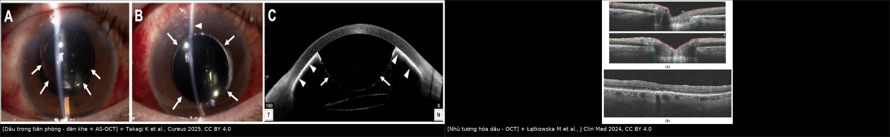
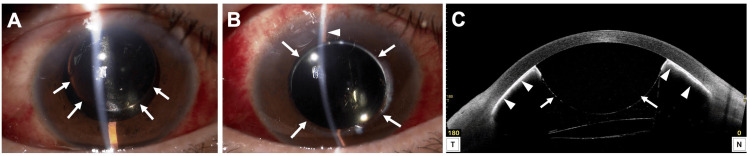
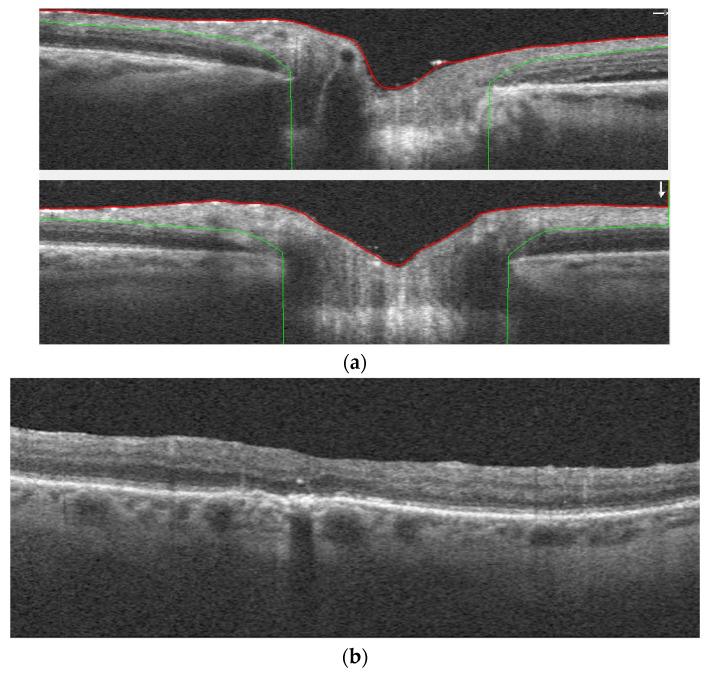
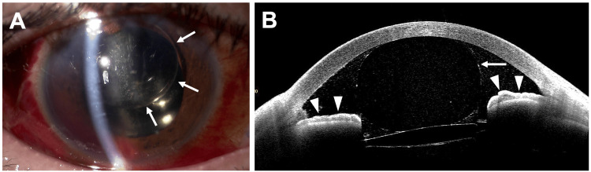

1416 — Glôcôm do dầu silicone: pupillary block, glôcôm bít bè do giọt nhũ tương, và chọn lấy dầu – van dẫn lưu – quang đông thể mi / Silicone oil glaucoma
Tags: pattern:tang-nhan-ap pattern:dau-tien-phong pattern:nhu-tuong-hoa pattern:goc-dong pattern:bit-be vung:tien-phong vung:goc-tien-phong vung:dich-kinh vung:dia-thi protocol:AS-OCT protocol:UBM protocol:gonioscopy protocol:PPV score:IOP
Mức chắc chắn (certainty): tổng hợp y văn (literature synthesis) — nhóm tự biên từ: tổng quan phẫu thuật glôcôm do dầu (CC BY 4.0, PMC9031548), tổng quan tăng nhãn áp sau bơm dầu (CC BY 4.0, PMC7558829), tổng quan nhũ tương hóa + OCT (CC BY 4.0, PMC11051299), ca pupillary block ngày 2 được xử trí tại đèn khe (CC BY 4.0, PMC12548765), so sánh Ahmed vs EX-PRESS 23 mắt (CC BY 4.0, PMC6031208), Ex-PRESS vs cắt bè 26 mắt (CC BY-NC-SA 3.0, PMC4845615), viscotrabeculotomy vs Ahmed 43 mắt (CC BY 4.0, PMC11826558), quang đông thể mi slow-coag 18 mắt (CC BY-NC-ND 4.0, PMC8404953); số liệu lấy dầu/bong tái phát kế thừa bài 1410 (PMC11321828, PMC11325823, PMC12516905, PMC13019722).
Vì sao bài này quan trọng: bài 1410 dạy nhận diện dầu tồn lưu và khi nào lấy dầu; bài này trả lời câu hỏi cấp cứu: nhãn áp tăng ở mắt đang có dầu — cơ chế nào, và xử trí gì trước? Hai cơ chế chính đòi hai hành động trái ngược nhau: pupillary block cần mở thông đồng tử ngay (nếu chờ, mù trong vài ngày), còn bít bè do giọt nhũ tương cần hạ áp + tính đến lấy dầu/đặt van. Tăng nhãn áp sau bơm dầu gặp ở 2,2–56% mắt, là biến chứng phổ biến thứ hai sau đục thể thủy tinh; 70% glôcôm sau cắt dịch kính + dầu quy trực tiếp cho dầu. Trong một ca nguyên văn, tiền phòng ngày 1 bình thường, nhãn áp bình thường, nhưng ngày 2 nhãn áp 60 mmHg, tiền phòng dẹt — tốc độ này là lý do bài phải đọc theo cơ chế, không theo con số nhãn áp.
1. Tổng quan bệnh học – cơ chế hình ảnh – vì sao dầu làm tăng nhãn áp
- Vật lý của dầu silicone (silicone oil, SO): polydimethylsiloxane, tỷ trọng 0,97 g/cm³ (nhẹ hơn nước → nổi lên trên, đây là gốc của tamponade tư thế và của việc dầu "bơi" vào tiền phòng khi bệnh nhân nằm ngửa lâu), chiết suất n = 1,40, độ nhớt 1.000–5.700 mPa·s, sức căng bề mặt với không khí 21,2–21,3 mN/m, sức căng mặt phân cách với nước ≈ 35 mN/m. Hai con số "21" và "35" không mâu thuẫn: một là surface tension (dầu–khí), một là interfacial tension (dầu–nước) — khi đọc y văn phải biết tác giả đang nói mặt phân cách nào.
- Hai thực thể, hai thời điểm (cách chia quyết định xử trí):
- Tăng nhãn áp sớm sau mổ (early postoperative ocular hypertension) — 3–40%; có thể do góc mở (viêm, corticoid, bít bè) hoặc góc đóng (pupillary block, synechia, tràn dầu quá mức).
- Glôcôm muộn do dầu (late-onset silicone oil glaucoma) — 3–30% ở các loạt mới (loạt cũ 20–50%); cơ chế chủ yếu là giọt nhũ tương + đại thực bào "silicomacrophage" bít bè, xơ hóa bè, synechia góc.
- Quỹ đạo nhãn áp — vì sao "vài giờ" đã nguy hiểm: nhãn áp trung bình từ 14,7 mmHg trước mổ lên 21,8 mmHg sau 3 giờ và 26,0 mmHg sau 48 giờ. Trong loạt Jabbour, 48% mắt tăng nhãn áp sau bơm dầu; 61,5% xảy ra trong tuần 1, 28,7% từ tuần 1–6, 9,8% sau 6 tuần; tỉ lệ tích lũy tăng nhãn áp 1 năm là 28,4%. Nhãn áp > 25 mmHg gặp ở 73% số mắt có giảm thị lực — tức tăng áp không "vô hại" chỉ vì bệnh nhân còn đếm ngón tay.
- TẠI SAO dầu làm tăng nhãn áp — bốn cơ chế, mỗi cơ chế một hình ảnh:
- Pupillary block (góc đóng): bọt dầu không nhũ tương đi qua đồng tử (aphakia, rách bao/zonule, mống mắt–thể thủy tinh không kín) vào tiền phòng; dầu nhẹ hơn nước nên tích tụ phía trên, đẩy mống mắt ra sau, nước tiền phòng bị dồn xuống dưới; khi dầu chiếm cả đồng tử, áp sau mống mắt tăng → mống mắt vồng ra trước, góc đóng, nhãn áp tăng rất nhanh (ca điển hình 60–67 mmHg). Đây là cơ chế cấp cứu.
- Bít bè trực tiếp bởi dầu chưa nhũ tương: dầu lỏng trong tiền phòng dính vào bè, gây viêm tại chỗ; hình ảnh là giọt dầu óng ánh ở góc trên gonioscopy, tăng phản xạ trên AS-OCT ở mặt mống mắt/góc.
- Glôcôm do nhũ tương hóa (silicomacrophagocytic open-angle glaucoma): dầu bị lực cắt phá thành giọt < 1 µm (dưới giới hạn đèn khe), đại thực bào ăn dầu (silicomacrophage) rồi bít bè; đồng thời giọt dầu gây viêm, xơ hóa và xẹp bè. Đây là lý do lấy dầu muộn không còn hạ được nhãn áp: tổn thương bè đã không hồi phục. Nhũ tương hóa gặp ở 0,7–56%, khởi phát trung bình 13,2 ± 4,8 tháng (sớm nhất 2 tháng), tăng theo thời gian giữ dầu, dầu nhớt thấp, bơm thiếu thể tích, rung giật nhãn cầu, còn dịch kính.
- Góc đóng do synechia/rubeosis + yếu tố thuận lợi khác: viêm mạn tính tạo PAS; xuất huyết tiền phòng (39% trong một loạt) tạo glôcôm hồng cầu; corticoid sau mổ gây đáp ứng tăng nhãn áp; bơm quá thể tích (overfill) làm nhãn áp tăng ngay.
- Vì sao dầu trong tiền phòng lại độc cho giác mạc: giọt dầu bám nội mô → apoptosis; confocal phát hiện bất thường nội mô ở tới 75% mắt có dầu tiền phòng và ~40% toàn bộ mắt bơm dầu dù đèn khe bình thường; bệnh giác mạc do dầu 2–30%. Nghĩa là "dầu trong tiền phòng" vừa là nguyên nhân glôcôm, vừa là dấu hiệu phải đánh giá nội mô.
- Vì sao tháo dầu không phải "chữa khỏi": tháo dầu đơn thuần kiểm soát nhãn áp 62% lúc 24 tháng (Budenz), 57,1% (Nguyen), 45,5% (Honavar — tất cả vẫn cần thuốc), và chỉ 1/11 ca (Moisseiev); trong đoàn hệ 58 mắt, 14/16 ca vẫn cần thuốc hạ nhãn áp sau tháo dầu. Lý do: bè đã xơ hóa, và tháo dầu làm mất tamponade → bong tái phát 14,9–22,4% (bài 1410). Vì vậy câu hỏi đúng không phải "có lấy dầu không" mà là "bè còn khả năng hồi phục không, và võng mạc có chịu được việc tháo dầu không".
2. Mẫu hình + chẩn đoán phân biệt theo cơ chế (Gamut)
Ba câu hỏi bắt buộc trước mọi quyết định: (1) tiền phòng sâu hay dẹt? (2) có dầu/bọt dầu trong tiền phòng không? (3) góc mở hay đóng, có PAS/rubeosis/giọt dầu trên bè không? — cả ba trả lời bằng đèn khe + gonioscopy, AS-OCT/UBM chỉ bổ sung.
- Nhóm A — góc ĐÓNG (phải mở thông ngay):
- Pupillary block do dầu: tiền phòng nông/dẹt, bọt dầu lớn ở bờ đồng tử, nhãn áp rất cao, đau, giác mạc phù nhẹ; mắt aphakia hoặc pseudophakia có rách zonule là ổ thuận lợi. Bọt dầu ở phía trên vì dầu nhẹ hơn nước.
- Pupillary block do synechia sau/dính mống mắt–thể thủy tinh: không thấy bọt dầu tự do nhưng không có bờ đồng tử thông thoáng; thường kèm viêm nặng, fibrin.
- Góc đóng do PAS/rubeosis: góc dính từng phần, có mạch bất thường; đây là nhóm không hồi phục bằng iridotomy.
- Nhóm B — góc MỞ (hạ áp nội khoa trước, tính can thiệp sau):
- Tăng áp sớm do viêm/corticoid/bít bè: tiền phòng sâu, có tế bào, giọt dầu lơ lửng; nhãn áp tăng trong tuần đầu.
- Glôcôm do nhũ tương hóa: góc mở, giọt dầu trên bè ("oil droplets in the angle"), nhãn áp tăng dần theo tháng–năm; AS-OCT thấy điểm tăng phản xạ trên mặt mống mắt/góc; OCT hậu cực có thể thấy giọt tăng phản xạ trong dịch kính/nội võng mạc/đĩa thị.
- Bơm quá thể tích: nhãn áp tăng ngay sau mổ, tiền phòng sâu, không viêm rõ; xử trí bằng lấy bớt dầu.
- Nhóm C — tăng áp "không do dầu" nhưng cùng bối cảnh (đừng bỏ sót): glôcôm góc mở có sẵn bộc lộ sau mổ, glôcôm hồng cầu do xuất huyết tiền phòng, hội chứng ly giải sau chấn thương, tăng áp do thuốc dãn đồng tử/atropine ở mắt hẹp góc.

Trái: dầu trong tiền phòng — (A,B) đèn khe, dầu (mũi tên) lấp tiền phòng, phản xạ ánh sáng khác nước; (C) AS-OCT: dầu trong tiền phòng (đầu mũi tên) đẩy mống mắt ra sau, tiền phòng nông. Phải: (a) OCT đĩa thị có giọt tăng phản xạ trên đĩa thị; (b) giọt tăng phản xạ trong võng mạc kèm bóng. Ảnh ghép letterbox, giữ nguyên aspect. Nguồn: Takagi K et al., Cureus 2025 (PMC12548765) Fig. 2, CC BY 4.0; Łątkowska M et al., J Clin Med 2024 (PMC11051299) Fig. 2, CC BY 4.0.3. Bảng so sánh phân biệt (ma trận đối chiếu)
| Thực thể (entity) | Hình ảnh điển hình (đèn khe / AS-OCT / UBM / OCT) | Chốt vào (rule-in) | Chốt loại (rule-out) | Gợi ý xác nhận |
|---|---|---|---|---|
| Pupillary block do bọt dầu | Tiền phòng dẹt/nông, bọt dầu lớn kẹt bờ đồng tử, dầu phía trên; AS-OCT: mống mắt vồng ra trước, góc đóng; nhãn áp 60–67 mmHg | Mắt có dầu + nhãn áp tăng cấp + tiền phòng dẹt + bọt dầu ở đồng tử | Tiền phòng sâu, góc mở, chỉ có giọt nhỏ trên bè → không phải block | Soi góc trước và sau khi hạ áp; thử nghiệm nằm sấp/dãn đồng tử; mở iridotomy rồi đo lại |
| Tăng áp sớm góc mở (viêm/corticoid/bít bè) | Tiền phòng sâu, tế bào/fibrin, giọt dầu lơ lửng; góc mở; xuất hiện tuần 1 | Nhãn áp tăng trong 1–2 tuần đầu, góc MỞ, có viêm hoặc đang dùng corticoid | Góc đóng/PAS; overfill (tiền phòng quá sâu + dầu đầy) | Đáp ứng với thuốc hạ áp + giảm corticoid; theo dõi 3–6 tuần |
| Glôcôm do nhũ tương hóa (silicomacrophage) | Góc mở, giọt dầu vàng óng trên bè; AS-OCT: điểm tăng phản xạ mặt mống mắt/góc; OCT: giọt tăng phản xạ trong dịch kính/nội võng mạc; tiến triển tháng–năm | Tiền sử dầu ≥ 3 tháng + giọt ở góc + nhãn áp tăng dần + OCT có giọt | Góc đóng hoàn toàn do PAS; không có giọt dầu và nhãn áp tăng ngay sau mổ | Gonioscopy + AS-OCT + OCT hậu cực; đối chiếu thời gian giữ dầu |
| Góc đóng do PAS/rubeosis | Góc dính từng phần/toàn bộ, màng xơ hoặc mạch; tiền phòng có thể sâu nhưng góc đóng | Dính góc thấy rõ + nhãn áp không đáp ứng iridotomy | Góc mở hoàn toàn, chỉ có giọt dầu | Gonioscopy góc 360°, AS-OCT góc, soi mống mắt tìm rubeosis |
| Bơm dầu quá thể tích (overfill) | Nhãn áp cao ngay sau mổ, tiền phòng sâu, dầu đầy sát thể thủy tinh/IOL, không viêm | Tương quan thời điểm với mổ + hình ảnh dầu đầy quá mức | Viêm/bít bè (có tế bào, không quá đầy) | So sánh với phim/ghi chú mổ; lấy bớt dầu rồi đo lại |
| Glôcôm hồng cầu / ly giải (bối cảnh chấn thương) | Máu tiền phòng, tế bào hồng cầu, có thể giả tiền phòng; góc mở nhưng bè bít | Xuất huyết tiền phòng + chấn thương/mổ phức tạp + nhãn áp tăng | Dầu trong tiền phòng (phản xạ khác, không lắng hồng cầu) | Đèn khe + AS-OCT; theo dõi hồng cầu; điều trị theo nguyên nhân |
4. Protocol chụp/đo + hệ phân độ & thuật toán xử trí
Đo và chẩn đoán (làm ngay trong cơn):
- Nhãn áp: đo bằng tonometer phù hợp tình trạng giác mạc; ghi nhận giác mạc phù sau ghép/mổ có thể làm đọc thấp giả — đây là bẫy hay gặp ở mắt đã mổ phức tạp.
- Đèn khe: độ sâu tiền phòng, bọt dầu, tế bào/fibrin, vị trí mống mắt, thể thủy tinh/IOL.
- Gonioscopy (chuẩn vàng): góc mở/đóng, PAS 360°, rubeosis, giọt dầu trên bè. Phải làm sau khi hạ áp và làm lại sau can thiệp.
- AS-OCT tiền phòng: đo độ sâu tiền phòng, độ mở góc, khoảng cách mống mắt–giác mạc, thấy giọt tăng phản xạ trên mặt mống mắt/góc; giá trị khi giác mạc phù nhẹ hoặc khi không soi góc được.
- UBM (50 MHz): bổ sung khi cần nhìn thể mi–mống mắt–góc sau, mống mắt dày, hoặc nghi dầu sau mống mắt.
- OCT hậu cực/RNFL–GCC: khi môi trường trong, để phát hiện giọt tăng phản xạ và đánh giá tổn thương thị thần kinh; thị trường khi bệnh nhân hợp tác.
Thuật toán xử trí (theo cơ chế trước, theo nhãn áp sau):
flowchart TD
A[Nhãn áp tăng ở mắt có dầu] --> B[Đèn khe + soi góc + AS-OCT]
B --> C{Tiền phòng dẹt, góc đóng, bọt dầu ở đồng tử?}
C -->|Có| D[Hạ áp nội khoa + nằm sấp + dãn đồng tử]
D --> E[Mở iridotomy/iridectomy dưới mức dầu]
E --> F{Thông thoáng?}
F -->|Không| G[Mở bằng phẫu thuật/transfixion 30G]
C -->|Không| H{Góc mở, có giọt dầu trên bè?}
H -->|Có| I[Thuốc hạ áp + cân nhắc lấy dầu nếu võng mạc ổn]
H -->|Không| J[Tìm nguyên nhân khác: viêm, corticoid, overfill, máu]
I --> K{Đạt đích sau 3 thuốc?}
K -->|Không| L[Chọn: cắt bè + MMC, van dẫn lưu, CPC, MIGS/SLT]
L --> M[Theo dõi OCT RNFL-GCC + thị trường]
Ngưỡng và lựa chọn can thiệp (số từ y văn):
- Lấy dầu đơn thuần: thành công 62%/24 tháng (Budenz), 57,1% (Nguyen), 45,5% (Honavar); thất bại chủ yếu do nhãn áp không kiểm soát (92%); khi phối hợp lấy dầu + mổ glôcôm, thất bại chủ yếu do hạ áp quá mức (75%) → phải cá thể hóa.
- Cắt bè + MMC: thành công hoàn toàn 40%, thành công có thuốc 60% lúc 2 năm (Errico); một loạt khác chỉ 21,1% có thuốc và 15,8% tuyệt đối lúc 1 năm (Singh) — kém hơn rõ so với van; ưu điểm duy nhất là rẻ, nhưng bờ kết mạc đã mổ và dầu trong tiền phòng dễ bít lỗ.
- Van dẫn lưu (Ahmed/Baerveldt/PAUL): thành công 62–80% ở 12–24 tháng; hạ áp quá mức tới 50%; đặt phía dưới ít bị dầu bít hơn (góc dưới–mũi an toàn hơn); dùng viscoelastic trong mổ để chặn dầu đi vào ống.
- EX-PRESS: thành công 73% (không thuốc)/81,8% (có thuốc) lúc 2 năm, nhãn áp 33 ± 6,4 → 17,8 ± 6,2 mmHg (Errico); nhưng một so sánh 23 mắt cho Ahmed 78,6% vs EX-PRESS 33,3% lúc 1 năm (PMC6031208) và El-Saied báo EX-PRESS 100% — mâu thuẫn nguồn rõ rệt, nên không dùng một con số để hứa với bệnh nhân.
- Quang đông thể mi xuyên củng mạc (TSCPC): thành công 44–81,8% tùy loạt; slow-coag 18 mắt: nhãn áp 29,7 ± 9,6 → 14,6 ± 6,5 mmHg lúc 12 tháng, thuốc 4,2 ± 0,9 → 1,9 ± 1,3; hạ áp quá mức 5,6–13,2%; cần lặp tới 4 lần, cách 6–8 tuần; mất cảm giác sáng 56% trong một loạt (thường do bệnh nền, không chắc do tia).
- Nhẹ hơn (nhãn áp ≤ 25 mmHg, góc mở): SLT giảm ~20% lúc 1 năm, thành công 59,5%; GATT hạ 31 ± 4,1 → 15,6 ± 4,6 mmHg (một loạt), 32,7 ± 5,1 → 13,6 ± 1,8 mmHg, thành công 93,3% nhưng phần lớn vẫn cần thuốc.
5. Biến thể bình thường và cạm bẫy
- Tăng nhãn áp thoáng qua sau mổ (không phải glôcôm): nhãn áp tăng trong 24–72 giờ do viscoelastic/viêm, tự về bình thường; không đặt van vì một lần đo. Ngược lại, tăng áp kéo dài ≥ 2 lần khám hoặc một lần ≥ 25 mmHg đã là ngưỡng cần điều trị (tiêu chuẩn dùng trong loạt Jabbour để dự báo giảm thị lực).
- Giọt dầu vs sắc tố/bọc mống mắt trên AS-OCT: giọt dầu tăng phản xạ mạnh, bờ tròn, có bóng phía sau, nằm trên bề mặt mống mắt/góc; sắc tố mống mắt là dải mỏng, không bóng, bọc mống mắt là cấu trúc có thành. So mắt bên kia giúp tránh gọi nhầm.
- Dầu nhũ tương < 1 µm không thấy trên đèn khe: đèn khe/gonioscopy âm không loại trừ nhũ tương hóa; AS-OCT/OCT mới thấy (bài 1410). Đừng kết luận "không có dầu trong tiền phòng" chỉ vì không thấy bằng mắt thường.
- Thỏa mãn tìm kiếm (satisfaction of search): đã thấy glôcôm do dầu thì dễ bỏ bong võng mạc tái phát, giả phình mạch, nhiễm trùng — luôn khám đáy mắt/B-scan trước khi quyết định lấy dầu.
- Đo nhãn áp sai ở mắt đã ghép giác mạc/giác mạc phù: có thể đọc thấp giả; dùng nhiều phương pháp và đánh giá đĩa thị thay vì tin một con số.
- Iridotomy đóng lại 11–32%: một lần mở không đủ; phải khám lại, mở rộng, và điều trị viêm/fibrin (corticoid dưới kết mạc, tPA nội tiền phòng) nếu tái đóng.
6. Tự lượng giá — Blind Quiz
Ca 1 — Nam 51 tuổi, đái tháo đường tăng sinh, mổ phaco + cắt dịch kính + dầu 1 ngày trước, hôm nay đau nhiều.

- Gợi ý: ngày 1 tiền phòng bình thường, nhãn áp bình thường; ngày 2 tiền phòng dẹt, nhãn áp 60 mmHg.
- Câu hỏi: (1) Mô tả dấu hiệu chính trên (A), (B), (C). (2) Ba chẩn đoán phân biệt? (3) Dấu hiệu nào chốt cơ chế?
Bấm để hiện đáp án (findings + chẩn đoán)
- Dấu hiệu: (A,B) dầu silicone trong tiền phòng (mũi tên) — mức phản xạ khác nước, bờ cong theo giác mạc; (C) AS-OCT: dầu/khối tăng phản xạ trong tiền phòng (đầu mũi tên), mống mắt bị đẩy ra sau, tiền phòng nông → góc đóng.
- Chẩn đoán: pupillary block do dầu silicone (dầu đi qua đồng tử, tích tụ phía trên, chặn lưu thông thủy dịch). Phân biệt: viêm mống mắt–thể thủy tinh nặng, bơm quá thể tích, góc đóng nguyên phát có sẵn.
- Chốt: tiền phòng dẹt + bọt dầu kẹt đồng tử + nhãn áp tăng cấp; xử trí tại đèn khe: bơm viscoelastic, ấn mống mắt ra sau, rồi iridotomy xuyên giác mạc bằng lưỡi MVR — nhãn áp về bình thường, không phải tháo dầu.
- Nguồn ảnh: Takagi K et al., Cureus 2025 (PMC12548765) Fig. 2, CC BY 4.0.
Ca 2 — Bệnh nhân bơm dầu 8 tháng, nhãn áp 28 mmHg, giác mạc trong, không đau.

- Gợi ý: không có bọt dầu ở đồng tử; soi góc thấy giọt vàng óng trên bè.
- Câu hỏi: (1) Hai hình (a) và (b) cho thấy gì? (2) Cơ chế glôcôm ở ca này? (3) Vì sao tháo dầu muộn có thể không hạ được nhãn áp?
Bấm để hiện đáp án
- Dấu hiệu: (a) giọt tăng phản xạ trên đĩa thị; (b) giọt tăng phản xạ trong các lớp võng mạc kèm bóng phía sau — dầu nhũ tương đã đi vào nội võng mạc.
- Chẩn đoán: glôcôm do nhũ tương hóa dầu (silicomacrophagocytic open-angle glaucoma) — giọt < 1 µm bị đại thực bào ăn, bít bè và gây viêm/xơ bè; nhãn áp tăng dần theo tháng.
- Vì sao tháo dầu muộn kém hiệu quả: bè đã xơ hóa/xẹp — tháo dầu chỉ bỏ nguồn giọt mới, không hồi phục bè; các loạt cho thấy tháo dầu đơn thuần chỉ kiểm soát 45,5–62%, và 14/16 ca vẫn cần thuốc. Do đó cần van dẫn lưu/CPC song song, và theo dõi OCT/AS-OCT để bắt nhũ tương trước khi bè hỏng.
- Nguồn ảnh: Łątkowska M et al., J Clin Med 2024 (PMC11051299) Fig. 2, CC BY 4.0.
Ca 3 — Ba ngày sau mổ, tiền phòng sâu trở lại nhưng còn dầu ở góc; nhãn áp 18 mmHg.

- Gợi ý: bệnh nhân đã được mở iridotomy; vẫn thấy dầu di trú trong tiền phòng.
- Câu hỏi: (1) Dầu còn trong tiền phòng có nghĩa thất bại? (2) Cần theo dõi gì để phát hiện glôcôm muộn? (3) Khi nào mới cân nhắc lấy dầu?
Bấm để hiện đáp án
- Dấu hiệu: (A) dầu di trú trong tiền phòng (mũi tên), tiền phòng đã sâu, nhãn áp bình thường; (B) AS-OCT: giọt dầu ở góc (đầu mũi tên) nhưng góc mở, không còn block.
- Ý nghĩa: không phải thất bại — mục tiêu cấp cứu là mở thông đồng tử, không phải làm sạch dầu; dầu còn lại sẽ tiếp tục nhũ tương hóa và có thể gây glôcôm muộn.
- Theo dõi: nhãn áp mỗi lần khám, gonioscopy định kỳ, AS-OCT (giọt ở góc, độ sâu tiền phòng), OCT RNFL–GCC/thị trường, đếm tế bào nội mô nếu có máy.
- Cân nhắc lấy dầu khi: nhãn áp không kiểm soát dù đã dùng 3 thuốc, nhũ tương tiến triển, bệnh giác mạc do dầu, hoặc có kế hoạch mổ glôcôm — và chỉ khi võng mạc áp, không co kéo, nguy cơ bong tái phát thấp (bài 1410).
- Nguồn ảnh: Takagi K et al., Cureus 2025 (PMC12548765) Fig. 5, CC BY 4.0.
Bài liên quan chéo
- 1410 – Lấy dầu silicone & dầu tồn lưu: nhũ tương hóa, giọt tăng phản xạ trên OCT, bong tái phát sau lấy dầu
- 1411 – Tăng nhãn áp do corticoid nội nhãn: DEX-I, implant lạc tiền phòng
- 1417 – Khi nào GIỮ dầu silicone vĩnh viễn, không lấy dầu
- 442 – Glôcôm trên OCT: RNFL/GCC và đánh giá tổn thương thị thần kinh
- 1402 – Bong võng mạc sau viêm nội nhãn: chọn dầu hay khí
Ảnh
1416_dau-tien-phong_Slitlamp-AS-OCT_PMC12548765-Fig2-CCBY.jpg— Takagi K et al., Cureus 2025 (PMC12548765) Fig. 2, CC BY 4.0, nguyên bản.1416_dau-tien-phong-sau-xu-tri_Slitlamp-AS-OCT_PMC12548765-Fig5-CCBY.jpg— cùng bài, Fig. 5, CC BY 4.0, nguyên bản.1416_nhu-tuong-hoa_OCT_PMC11051299-Fig2-CCBY.jpg— Łątkowska M et al., J Clin Med 2024 (PMC11051299) Fig. 2, CC BY 4.0, nguyên bản.composite_dau-tien-phong-nhu-tuong-hoa.jpg— ảnh ghép letterbox từ 2 ảnh CC BY 4.0 ở trên, dải attribution trong ảnh; giữ aspect, không crop/kéo giãn.- Không tải ảnh từ Radiopaedia/AuntMinnie/Retina Image Bank; chỉ dẫn link ở
sources.md.
Không dùng để chẩn đoán độc lập khi chưa có người hướng dẫn.